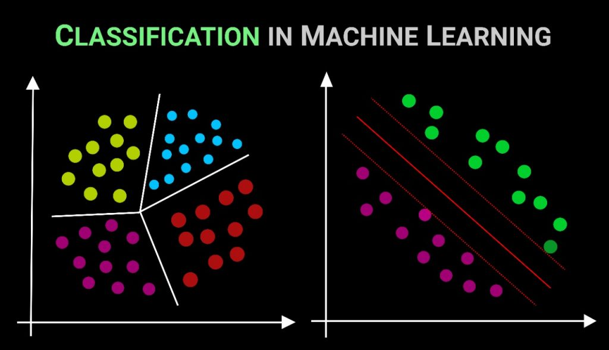
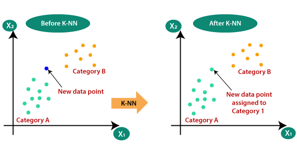

{kind=link}
{kind=link}
{kind=link}
{kind=link}
#Importing librairies
import pandas as pd
import numpy as np
# Scikit-learn library: For SVM
from sklearn import preprocessing
from sklearn.metrics import confusion_matrix
from sklearn import svm
import itertools
# Matplotlib library to plot the charts
import matplotlib.pyplot as plt
import matplotlib.mlab as mlab
# Library for the statistic data vizualisation
import seaborn
%matplotlib inline
Definition and Overview of Classification
Classification in machine learning and statistics is a supervised learning approach where the objective is to categorize data into predefined classes. In simpler terms, it involves deciding which category or class a new observation belongs to, based on a training set of data containing observations whose category membership is known.
Key Components
Classes or Categories: These are the distinct groups or categories that data points are classified into. For instance, in a binary classification, there are two classes, while in multi-class classification, there could be three or more.
Features: These are individual independent variables that act as the input for the process. Each feature contributes to determining the output class.
Labels: In the training dataset, each data point is tagged with the correct label, which the algorithm then learns to predict.
How Classification Works
Training Phase: The algorithm is trained on a labeled dataset, where it learns the relationship between features and the corresponding class labels.
Model Building: The algorithm creates a model that maps inputs (features) to desired outputs (labels). This model represents the learned patterns from the data.
Testing and Prediction: The trained model is then used to predict the class labels of new, unseen data. The performance of the model is typically evaluated using metrics like accuracy, precision, recall, and F1 score.
Types of Classification
Binary Classification: Involves two classes. Common examples include spam detection (spam or not spam) and medical diagnoses (sick or healthy).
Multiclass Classification: Involves more than two classes, but each instance is assigned to only one class. An example would be classifying types of fruits.
Multilabel Classification: Each instance may be assigned to multiple classes. For example, a news article might be categorized into multiple genres like sports, politics, and finance.
Applications
Medical Diagnosis: Identifying diseases based on symptoms and test results.
Spam Filtering: Categorizing emails as spam or non-spam.
Sentiment Analysis: Classifying the sentiment of text data (positive, negative, neutral).
Image Recognition: Categorizing images into various classes like animals, objects, etc. Credit Scoring: Assessing creditworthiness as high-risk or low-risk.
Once trained, the algorithm can classify new, unseen data by assessing its similarity to the patterns it has learned. It predicts the likelihood of the new data point falling into one of the predefined categories. This process is akin to your email provider recognizing whether an incoming email is spam or not based on past experiences.
Classification Algorithms
Logistic Regression:
Overview: Logistic Regression is used for binary classification problems. It models the probability that each input belongs to a particular category. Mechanism: This algorithm uses a logistic function to squeeze the output of a linear equation between 0 and 1. The result is the probability that the given input point belongs to a certain class.
Pros: Simple and efficient. Provides a probability score for observations. Low variance, avoiding overfitting.
Cons: Struggles with non-linear data. Assumes no missing values and that predictors are independent.
Applications: Commonly used in fields like credit scoring, medical fields for disease diagnosis, and predictive analytics.
Naive Bayes:
Overview: Based on Bayes’ Theorem, it assumes independence among predictors. Mechanism: It calculates the probability of each class and the conditional probability of each class given each input value. These probabilities are then used to classify the data.
Pros: Fast and efficient. Performs well with a smaller amount of data. Handles multi-class prediction problems well.
Cons: The assumption of independent features is often unrealistic. Can be outperformed by more complex models.
Applications: Widely used in spam filtering, text analysis, and sentiment analysis.
K-Nearest Neighbors (KNN):
Overview: A non-parametric method used for classification and regression. Mechanism: Classifies data based on how its neighbors are classified. It finds the K nearest points to the new data point and classifies it based on the majority class of these points.

Pros: Simple and intuitive. No need to build a model or tune parameters. Flexible to feature/distance choices.
Cons: Slows significantly as data size increases. Sensitive to irrelevant or redundant features.
Applications: Used in recommendation systems, image recognition, and more.
Support Vector Machine (SVM):
Overview: Effective in high dimensional spaces and best suited for binary classification. Mechanism: Constructs a hyperplane in a multidimensional space to separate different classes. SVM finds the best margin (distance between the line and the support vectors) to separate the classes.

Pros: Effective in high-dimensional spaces. Uses a subset of training points (support vectors), so it’s memory efficient.
Cons: Not suitable for larger datasets. Does not perform well with noisy data.
Applications: Used in face detection, text and hypertext categorization, classification of images.
Decision Tree:
Overview: A tree-structure algorithm, where each node represents a feature, each branch a decision rule, and each leaf a class. Mechanism: Splits the data into subsets based on feature values. This process is repeated recursively, resulting in a tree with decision nodes and leaf nodes.
Pros: Easy to interpret and explain. Requires little data preparation. Can handle both numerical and categorical data.
Cons: Prone to overfitting, especially with complex trees. Small changes in data can lead to a different tree.
Applications: Used in customer segmentation, fraud detection, and risk assessment.
Example: Credit Card Fraud Detection
Data recuperation
data = pd.read_csv('R:/Blog/posts/classification/creditcard.csv') # Reading the file .csv
df = pd.DataFrame(data) # Converting data to Panda DataFrameData Visualization
df = pd.DataFrame(data) # Converting data to Panda DataFramedf.describe() # Description of statistic features (Sum, Average, Variance, minimum, 1st quartile, 2nd quartile, 3rd Quartile and Maximum)| Time | V1 | V2 | V3 | V4 | V5 | V6 | V7 | V8 | V9 | ... | V21 | V22 | V23 | V24 | V25 | V26 | V27 | V28 | Amount | Class | |
|---|---|---|---|---|---|---|---|---|---|---|---|---|---|---|---|---|---|---|---|---|---|
| count | 284807.000000 | 2.848070e+05 | 2.848070e+05 | 2.848070e+05 | 2.848070e+05 | 2.848070e+05 | 2.848070e+05 | 2.848070e+05 | 2.848070e+05 | 2.848070e+05 | ... | 2.848070e+05 | 2.848070e+05 | 2.848070e+05 | 2.848070e+05 | 2.848070e+05 | 2.848070e+05 | 2.848070e+05 | 2.848070e+05 | 284807.000000 | 284807.000000 |
| mean | 94813.859575 | 1.168375e-15 | 3.416908e-16 | -1.379537e-15 | 2.074095e-15 | 9.604066e-16 | 1.487313e-15 | -5.556467e-16 | 1.213481e-16 | -2.406331e-15 | ... | 1.654067e-16 | -3.568593e-16 | 2.578648e-16 | 4.473266e-15 | 5.340915e-16 | 1.683437e-15 | -3.660091e-16 | -1.227390e-16 | 88.349619 | 0.001727 |
| std | 47488.145955 | 1.958696e+00 | 1.651309e+00 | 1.516255e+00 | 1.415869e+00 | 1.380247e+00 | 1.332271e+00 | 1.237094e+00 | 1.194353e+00 | 1.098632e+00 | ... | 7.345240e-01 | 7.257016e-01 | 6.244603e-01 | 6.056471e-01 | 5.212781e-01 | 4.822270e-01 | 4.036325e-01 | 3.300833e-01 | 250.120109 | 0.041527 |
| min | 0.000000 | -5.640751e+01 | -7.271573e+01 | -4.832559e+01 | -5.683171e+00 | -1.137433e+02 | -2.616051e+01 | -4.355724e+01 | -7.321672e+01 | -1.343407e+01 | ... | -3.483038e+01 | -1.093314e+01 | -4.480774e+01 | -2.836627e+00 | -1.029540e+01 | -2.604551e+00 | -2.256568e+01 | -1.543008e+01 | 0.000000 | 0.000000 |
| 25% | 54201.500000 | -9.203734e-01 | -5.985499e-01 | -8.903648e-01 | -8.486401e-01 | -6.915971e-01 | -7.682956e-01 | -5.540759e-01 | -2.086297e-01 | -6.430976e-01 | ... | -2.283949e-01 | -5.423504e-01 | -1.618463e-01 | -3.545861e-01 | -3.171451e-01 | -3.269839e-01 | -7.083953e-02 | -5.295979e-02 | 5.600000 | 0.000000 |
| 50% | 84692.000000 | 1.810880e-02 | 6.548556e-02 | 1.798463e-01 | -1.984653e-02 | -5.433583e-02 | -2.741871e-01 | 4.010308e-02 | 2.235804e-02 | -5.142873e-02 | ... | -2.945017e-02 | 6.781943e-03 | -1.119293e-02 | 4.097606e-02 | 1.659350e-02 | -5.213911e-02 | 1.342146e-03 | 1.124383e-02 | 22.000000 | 0.000000 |
| 75% | 139320.500000 | 1.315642e+00 | 8.037239e-01 | 1.027196e+00 | 7.433413e-01 | 6.119264e-01 | 3.985649e-01 | 5.704361e-01 | 3.273459e-01 | 5.971390e-01 | ... | 1.863772e-01 | 5.285536e-01 | 1.476421e-01 | 4.395266e-01 | 3.507156e-01 | 2.409522e-01 | 9.104512e-02 | 7.827995e-02 | 77.165000 | 0.000000 |
| max | 172792.000000 | 2.454930e+00 | 2.205773e+01 | 9.382558e+00 | 1.687534e+01 | 3.480167e+01 | 7.330163e+01 | 1.205895e+02 | 2.000721e+01 | 1.559499e+01 | ... | 2.720284e+01 | 1.050309e+01 | 2.252841e+01 | 4.584549e+00 | 7.519589e+00 | 3.517346e+00 | 3.161220e+01 | 3.384781e+01 | 25691.160000 | 1.000000 |
8 rows × 31 columns
df_fraud = df[df['Class'] == 1] # Recovery of fraud data
plt.figure(figsize=(15,10))
plt.scatter(df_fraud['Time'], df_fraud['Amount']) # Display fraud amounts according to their time
plt.title('Scratter plot amount fraud')
plt.xlabel('Time')
plt.ylabel('Amount')
plt.xlim([0,175000])
plt.ylim([0,2500])
plt.show()
nb_big_fraud = df_fraud[df_fraud['Amount'] > 1000].shape[0] # Recovery of frauds over 1000
print('There are only '+ str(nb_big_fraud) + ' frauds where the amount was bigger than 1000 over ' + str(df_fraud.shape[0]) + ' frauds')There are only 9 frauds where the amount was bigger than 1000 over 492 fraudsThere are only 9 frauds where the amount was bigger than 1000 over 492 frauds
- Unbalanced data
number_fraud = len(data[data.Class == 1])
number_no_fraud = len(data[data.Class == 0])
print('There are only '+ str(number_fraud) + ' frauds in the original dataset, even though there are ' + str(number_no_fraud) +' no frauds in the dataset.')There are only 492 frauds in the original dataset, even though there are 284315 no frauds in the dataset.There are only 492 frauds in the original dataset, even though there are 284315 no frauds in the dataset.
print("The accuracy of the classifier then would be : "+ str((284315-492)/284315)+ " which is the number of good classification over the number of tuple to classify")The accuracy of the classifier then would be : 0.998269524998681 which is the number of good classification over the number of tuple to classifyCorrelation of features
df_corr = df.corr() # Calculation of the correlation coefficients in pairs, with the default method:
# Pearson, Standard Correlation Coefficientplt.figure(figsize=(15,10))
seaborn.heatmap(df_corr, cmap="YlGnBu") # Displaying the Heatmap
seaborn.set(font_scale=2,style='white')
plt.title('Heatmap correlation')
plt.show()
As we can notice, most of the features are not correlated with each other. This corroborates the fact that a PCA was previously performed on the data.
What can generally be done on a massive dataset is a dimension reduction. By picking th emost important dimensions, there is a possiblity of explaining most of the problem, thus gaining a considerable amount of time while preventing the accuracy to drop too much.
However in this case given the fact that a PCA was previously performed, if the dimension reduction is effective then the PCA wasn’t computed in the most effective way. Another way to put it is that no dimension reduction should be computed on a dataset on which a PCA was computed correctly.
Correlation of features
OVERSAMPLING
One way to do oversampling is to replicate the under-represented class tuples until we attain a correct proportion between the class
However as we haven’t infinite time nor the patience, we are going to run the classifier with the undersampled training data (for those using the undersampling principle if results are really bad just rerun the training dataset definition)
UNDERSAMPLING
import pandas as pd
# We seperate ours data in two groups : a train dataset and a test dataset
# First we build our train dataset
df_train_all = df[0:150000] # We cut in two the original dataset
df_train_1 = df_train_all[df_train_all['Class'] == 1] # We seperate the data which are the frauds and the no frauds
df_train_0 = df_train_all[df_train_all['Class'] == 0]
print('In this dataset, we have ' + str(len(df_train_1)) +" frauds so we need to take a similar number of non-fraud")
df_sample=df_train_0.sample(300)
combined_df = pd.concat([df_train_1, df_sample], ignore_index=True) # We gather the frauds with the no frauds.
combined_df = combined_df.sample(frac=1) # Then we mix our datasetIn this dataset, we have 293 frauds so we need to take a similar number of non-fraudIn this dataset, we have 293 frauds so we need to take a similar number of non-fraud
X_train = combined_df.drop(['Time', 'Class'], axis=1) # Drop the features "Time" (useless) and "Class" (label)
y_train = combined_df['Class'] # Create the label
X_train = np.asarray(X_train)
y_train = np.asarray(y_train)############################## with all the test dataset to see if the model learn correctly ##################
df_test_all = df[150000:]
X_test_all = df_test_all.drop(['Time', 'Class'],axis=1)
y_test_all = df_test_all['Class']
X_test_all = np.asarray(X_test_all)Confusion Matrix
class_names=np.array(['0','1']) # Binary label, Class = 1 (fraud) and Class = 0 (no fraud)# Function to plot the confusion Matrix
def plot_confusion_matrix(cm, classes,
title='Confusion matrix',
cmap=plt.cm.Blues):
plt.imshow(cm, interpolation='nearest', cmap=cmap)
plt.title(title)
plt.colorbar()
tick_marks = np.arange(len(classes))
plt.xticks(tick_marks, classes, rotation=45)
plt.yticks(tick_marks, classes)
fmt = 'd'
thresh = cm.max() / 2.
for i, j in itertools.product(range(cm.shape[0]), range(cm.shape[1])):
plt.text(j, i, format(cm[i, j], fmt),
horizontalalignment="center",
color="white" if cm[i, j] > thresh else "black")
plt.tight_layout()
plt.ylabel('True label')
plt.xlabel('Predicted label')Model Selection
So now, we’ll use a SVM model classifier, with the scikit-learn library.
classifier = svm.SVC(kernel='linear') # We set a SVM classifier, the default SVM Classifier (Kernel = Radial Basis Function)classifier.fit(X_train, y_train) # Then we train our model, with our balanced data train.SVC(kernel='linear')In a Jupyter environment, please rerun this cell to show the HTML representation or trust the notebook.
On GitHub, the HTML representation is unable to render, please try loading this page with nbviewer.org.
SVC(kernel='linear')
Testing the model
prediction_SVM_all = classifier.predict(X_test_all) #And finally, we predict our data test.cm = confusion_matrix(y_test_all, prediction_SVM_all)
plot_confusion_matrix(cm,class_names)
In this case we are gonna try to minimize the number of errors in our prediction results. Errors are on the anti-diagonal of the confusion matrix. But we can infer that being wrong about an actual fraud is far worse than being wrong about a non-fraud transaction.
That is why using the accuracy as only classification criterion could be considered unthoughtful. During the remaining part of this study our criterion will consider precision on the real fraud 4 times more important than the general accuracy. Even though the final tested result is accuracy.
print('Our criterion give a result of '
+ str( ( (cm[0][0]+cm[1][1]) / (sum(cm[0]) + sum(cm[1])) + 4 * cm[1][1]/(cm[1][0]+cm[1][1])) / 5))Our criterion give a result of 0.9170704904644433Our criterion give a result of 0.905383035408
print('We have detected ' + str(cm[1][1]) + ' frauds / ' + str(cm[1][1]+cm[1][0]) + ' total frauds.')
print('\nSo, the probability to detect a fraud is ' + str(cm[1][1]/(cm[1][1]+cm[1][0])))
print("the accuracy is : "+str((cm[0][0]+cm[1][1]) / (sum(cm[0]) + sum(cm[1]))))We have detected 181 frauds / 199 total frauds.
So, the probability to detect a fraud is 0.9095477386934674
the accuracy is : 0.9471614975483469We have detected 177 frauds / 199 total frauds.
So, the probability to detect a fraud is 0.889447236181 the accuracy is : 0.969126232317
Models Rank
There is a need to compute the fit method again, as the dimension of the tuples to predict went from 29 to 10 because of the dimension reduction
# Define a simple feature ranking function (you can customize this)
def rank_features(data):
# Implement your feature ranking logic here
ranked_features = data # Replace this with your actual feature ranking code
return ranked_features
# Now you can use the rank_features function
X_train_rank = rank_features(X_train)
X_test_all_rank = rank_features(X_test_all)prediction_SVM = classifier.predict(X_test_all_rank)cm = confusion_matrix(y_test_all, prediction_SVM)
plot_confusion_matrix(cm,class_names)
print('Our criterion give a result of '
+ str( ( (cm[0][0]+cm[1][1]) / (sum(cm[0]) + sum(cm[1])) + 4 * cm[1][1]/(cm[1][0]+cm[1][1])) / 5))Our criterion give a result of 0.9170704904644433Our criterion give a result of 0.912995958898
print('We have detected ' + str(cm[1][1]) + ' frauds / ' + str(cm[1][1]+cm[1][0]) + ' total frauds.')
print('\nSo, the probability to detect a fraud is ' + str(cm[1][1]/(cm[1][1]+cm[1][0])))
print("the accuracy is : "+str((cm[0][0]+cm[1][1]) / (sum(cm[0]) + sum(cm[1]))))We have detected 181 frauds / 199 total frauds.
So, the probability to detect a fraud is 0.9095477386934674
the accuracy is : 0.9471614975483469We have detected 179 frauds / 199 total frauds.
So, the probability to detect a fraud is 0.899497487437 the accuracy is : 0.966989844741